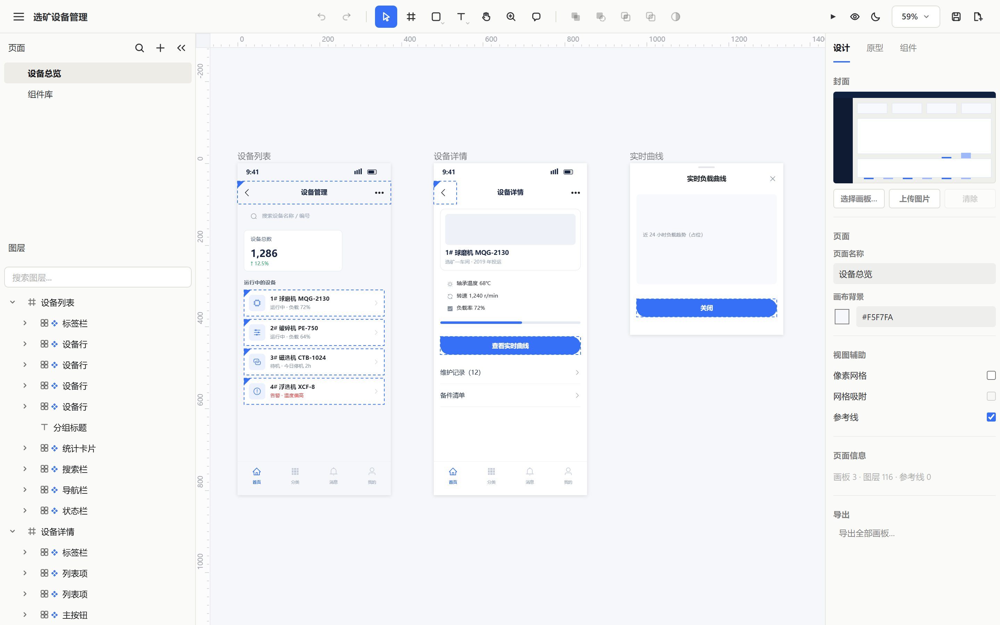
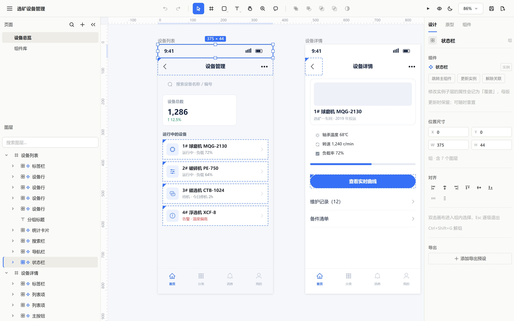
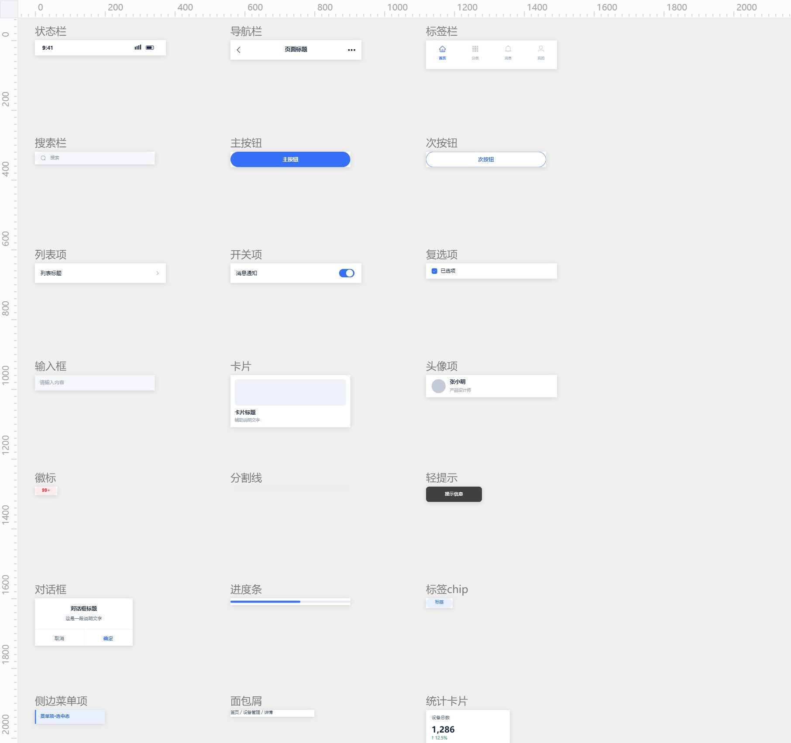
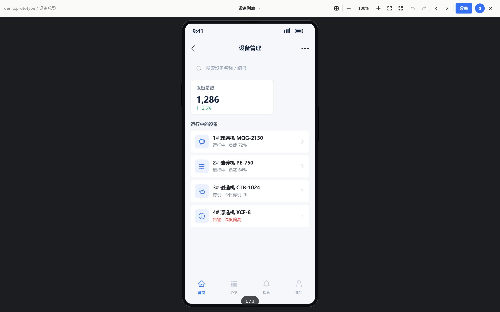

发布说明（本节不复制）
标题 prototype-html-builder：把整个原型编辑器，塞进一份 HTML 文件
摘要 不做账号、不做云、不装客户端。双击打开就是一个画布编辑器，改完保存，还是同一个文件。
操作 ① 从下方「正文」开始全选复制，粘贴到公众号草稿；② 四张配图在 wechat/assets/，若粘贴后丢失，按图注位置用编辑器重新上传；③ 「阅读原文」填 GitHub 地址。
备选标题 ① 不装软件、不要账号：一份 505 KB 的 HTML，就是你的原型编辑器 ② 我把一整个原型编辑器塞进了一个 HTML 文件
PROTOTYPE · 单文件原型引擎
prototype-html-builder：
把整个原型编辑器，塞进一份 HTML 文件
导读
一个 .prototype.html 文件，双击打开是编辑器：左边页面树，中间画板，右边属性面板。改完点保存，写回同一个文件。没有账号，没有云端，没有订阅——发给谁，谁都能改。
网页本身就是软件
做过原型的人都碰到过同一个问题：文件在别人电脑上打不开。
在线工具要账号和网络，桌面工具要装客户端，导出的 PNG 只是一张图，改一个错别字得回到原文件。
prototype-html-builder 走的是另一条路：交付物不是源文件，也不是截图，而是一个 HTML。
双击打开，它就是一个画布编辑器。选中、拖拽、改字、改色、复制粘贴、缩放、播放交互，操作手感和设计工具一致。
唯一的区别是：这个「软件」的安装包，505 KB。

▲ 编辑器：左侧页面树与图层，中间三块手机画板，右侧属性面板
505 KB 里装着什么
拆开看，只有两样东西。
一是编辑器壳：Canvas 渲染、选择框、参考线、评论、属性面板、演示模式，全部原生 JS 写的，没有框架、没有 CDN、没有任何外部请求。
二是一段 JSON：
<script type="application/json"
id="__doc">
{ "version": 1, "name": "选矿设备管理",
"pages": [ … ] }
</script>
文档就在这一段里。页面、画板、节点、交互、组件，全是 JSON 字段。数组顺序就是图层顺序，和设计工具左侧的图层面板一一对应。
换句话说：你看到的画布，是这份 JSON 的一次渲染；你点保存，只是把 JSON 换成了新的。
写一段 JSON，画一屏手机
规格是文档的声明式子集：只写人关心的字段，id、父子关系、实例快照由编译器生成。一个导航栏、一个图标、一行说明，就这样：
{ "type": "instance",
"comp": "navbar", "x": 0,
"y": 44,
"overrides": {
"标题": { "text": "设备管理" }
} },
{ "type": "icon",
"icon": "ep/search", "size": 24 },
{ "type": "text", "x": 16,
"text": "运行中的设备" }
编译一行命令：
node scripts/build-prototype.mjs \
spec.json -o demo.prototype.html
示例文档「选矿设备管理」：3 个画板、31 个节点、18 个组件实例、9 条交互，编译后 535 KB。
校验也没有省：validate-doc.mjs 会检查图标是否存在、id 是否唯一、交互目标是否存在、实例是否完整，退出码 0 / 1，可以直接接进 CI。
图标是真图标
原型里最容易露怯的是图标：截图贴上去、emoji 顶上、iconfont 塞字体、拿几个方块拼。
这里只有一种写法：
{ "type": "icon", "icon": "ep/search",
"size": 24, "color": "#1F2329" }
内置 218 个图标：Element Plus 125 个，Ant Design 93 个，全部是官方 SVG 路径，1024 网格，渲染走 Canvas 的 Path2D。
好处很实际：放大不糊，换色不用重新导图，同一个搜索图标在深色导航栏和浅色卡片里可以是两种颜色。
规范也一并写进了设计 Token：主色 #3670F7，正文 #1F2329，辅助 #86909C，分割线 #E5E6EB。
组件是母版，不是复制粘贴
导航栏、标签栏、卡片、列表行、分页器、对话框……重复出现的 UI，一律母版 + 实例：
{ "type": "instance",
"comp": "device-row",
"x": 16, "y": 310,
"overrides": {
"名称": { "text": "1# 球磨机" },
"状态": {
"text": "告警 · 温度偏高",
"color": "#F53F3F"
}
} }
内置 27 个母版，从状态栏到分页器。覆盖只写差异：改母版，所有实例同步；单个实例只改文字、颜色、图标这些白名单字段。
这是主流设计工具的组件逻辑，只是它写在 JSON 里。

▲ 选中一个实例：右侧直接出现「替换主组件 / 更新实例 / 解除关联」

▲ 组件库页：27 个母版平铺，拖进画板就是实例
交互也写在 JSON 里
{ "click": { "action": "打开画板",
"target": "设备详情",
"anim": "左滑" } }
5 类触发（单击 / 悬停 / 按下 / 拖拽 / 滚动），5 种动作（打开画板 / 打开弹层 / 关闭弹层 / 返回上一页 / 切换变体）。弹层位置、遮罩浓度、转场动画、时长，都能写。
写完之后点右上角播放，就是一个能点的原型——不是一段录屏，也不是一条改不动的时间轴。

▲ 演示模式：一屏一块画板，点一下跳转，底部显示 1 / 3
保存它自己会做
这一层听起来像魔术，其实用的是最朴素的办法。
保存时，编辑器用原始壳重建整个文件：只替换那段 JSON，其余字节原样保留，然后写回同一个文件。
副作用是：文件本身就是你的回滚点。
版本固定在你手上那份文件里，更新只在你主动点的时候发生。更关键的是：打开它不需要网络。断网、内网、发给客户，都一样。
怎么拿到它
两种方式，拿到的都是同一个文件。
一是直接下初始文件，双击即用，不装任何东西；想先看效果，就打开示例文档。
二是装成 Skill：把目录放进 agent 的 skills 里，让它读 references/spec.md，写 spec.json，跑编译和校验，交付一份能改的原型。
SKILL.md 第一屏就写死了三条硬约束：图标必须是 SVG、重复 UI 必须用母版实例、颜色字号间距必须取 Element Plus / Ant Design 的 token。
换句话说，它约束的不是 AI 的自由度，是产物的下限。
不装的地方
诚实地说几句。
它是 Canvas 渲染，不是 DOM，长文排版和富文本编辑不如浏览器原生；没有多人实时协作，协作方式就是把文件发过去；位图插画和复杂视觉仍要用 image 节点。
它是一个给人和 agent 改原型的工具，不是设计系统本身。
一个愿意把短板写进文档的项目，通常对自己的长处也更有底气。
回到那句话
一个反复被提起的标准：你能离开 AI 直接改产物，才谈得上真正拥有。
prototype-html-builder 把它做成了文件——交到你手里的不是一个截图稿，是一个编辑器。
GITHUB · 欢迎 Star
github.com/LabronGon/prototype-html-builder
PROTOTYPE-HTML-BUILDER · 单文件原型引擎
218 图标 / 27 母版 / 0 外部依赖